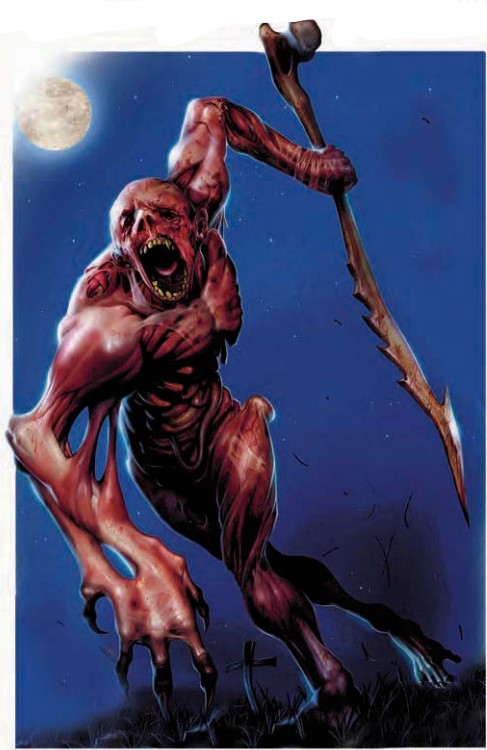

这只畸形的怪物看上去已经被剥皮烧透了。他的肢体被扭曲成可怕而滑稽的姿态。他没有眼睛，同时发出包含疯狂战意的尖叫。
| 资料栏位 | 破败衍体（Wrackspawn） 中型异界生物（混乱，邪恶，跨位面） |
|---|---|
| 生命骰 | 4d8+24（45HP） |
| 先攻 | +0 |
| 速度 | 20尺（4格） |
| 防御等级 | 14(+2盔甲，+2天生)，接触10，措手不及14 |
| 基本攻击/擒抱 | +4/+8 |
| 攻击 | 近战 骨制短矛+8（1d6+4附加苦痛）以及双爪*+3（2d4+2）或双爪+8（2d4+6）或远程 骨制短矛+4（1d6+4 附带苦痛） |
| 全力攻击 | 近战 骨制短矛+8（1d6+4附加苦痛）以及双爪*+3（2d4+2）或双爪+8（2d4+6）或远程 骨制短矛+4（1d6+4 附带苦痛） |
| 面宽/触及 | 5尺/5尺 |
| 特殊攻击 | 阵营攻击（混乱，邪恶），苦痛 |
| 特殊能力 | 目盲，盲视120尺，火焰抗力10；免疫凝视攻击，幻象和视觉效果 |
| 豁免 | 强韧+10，反射+4，意志+4 |
| 属性 | 力量19，敏捷10，体质22，智力6，感知11，魅力12 |
| 技能 | 攀爬+11，聆听+10，潜行+7，躲藏+7，威吓+8，跳跃+5 |
| 专长 | 技能专攻（聆听），健壮 |
| 环境 | 见后文（未翻） |
| 组织 | 见后文（未翻） |
| 挑战等级 | 3 |
| 宝物 | 碎肉盔甲（视作皮甲），骨制短矛 |
| 阵营 | 总是混乱邪恶 |
| 进化 | 5-8HD（中型） |
| 等级调整 | ― |
破败衍体因为恶魔无边无际的邪恶而存在。在无底深渊中，善良灵魂的残余部分被捕获并饱受折磨，破败衍体正是为使这些灵魂遭受痛苦而生。恐惧与痛苦造就了它们，它们也乐意于将恐惧与痛苦带给所有形式的生命。破败衍体理解深渊语。
*从上图大家可以看出来，这货根本没有双爪......原文是double claw 所以尊重原文
战斗破败衍体会不顾任何危险地冲入战斗。它们除了攻击最靠近的活体生物之外不会采用任何策略。破败衍体通常会忽略不死生物与构装生物，除非被它们攻击。尽管这样，它们还是是迅速地扑向可以感受痛苦的敌人。为数不多的例外是它们的同类和恶魔。破败衍体自然而然地畏惧恶魔与炼狱生物，它们通常会在战斗中对恶魔们畏而远之。
破败衍体使用的是取材自它们自己破烂身体的，丑陋的短矛。它们很少投掷这些珍贵的物品，相反更喜欢在近战中挥舞短矛。当无可选择时，破败衍体也许会向可以一击必杀的对手投出短矛。
苦痛（Su）：被破败衍体的骨制短矛伤害到的活体生物受到2D6额外伤害，同时因为痛苦而恶心一轮。通过一个DC18的强韧检定可以减半伤害并忽视恶心效果。豁免DC基于体质。
在知识（位面）上有级数的人物可以更多地了解破败衍体。当人物成功通过技能检定时，以下知识将被揭示，其中包括了更低DC的信息。
| 知识（位面） | 结果 |
|---|---|
| DC 13 | 这种怪物是破败衍体，一种次级恶魔。这个结果揭示了其所有异界生物特性。 |
| DC 18 | 破败衍体是被折磨到神志不清的善良灵魂的残存产物。他们仅为造成他人的苦痛而生。他们的骨制短矛可以对活体生物造成令人作呕的痛苦。 |
| DC 23 | 破败衍体经常忽略无生命目标，以及超小型或更小的生物。尽管缺乏视力，它们可以探测到120尺内的潜在受害者――在它们的感知范围内躲开他们是不可能的。 |
破败衍体（Wrackspawn）的存在，源于恶魔的邪恶无底深渊。它们是在无底深渊中被俘获并受尽折磨的善良灵魂的残骸，生来只为将痛苦施加于他人。恐惧与痛苦造就了它们，而它们也渴望将这一切带给所有生灵。
战术与策略破败衍体会不顾自身安危地冲入战斗。它们没有任何战术可言，只会攻击最近的生命体。破败衍体通常无视不死生物和构装体，除非被它们攻击；即便如此，它们也会迅速转向能够感受痛苦的敌人。唯一的例外是它们的同类和恶魔。破败衍体天生恐惧恶魔与炼狱生物，战斗中会尽量避开它们。
破败衍体挥舞着由自己断裂骨骼制成的丑陋短矛。它们极少投掷这些珍视的物品，更倾向于在近战中使用。在没有选择的情况下，破败衍体可能会将短矛投向它确信能一击杀死的敌人。
遭遇范例破败衍体不会交涉，也不接受投降。它们存在的意义就是让其他生物感受痛苦，并且会无情地追求这一目标。恶魔们将破败衍体当作炮灰，驱赶它们在战斗前冲锋。使用破败衍体的家伙通常会带上四只或更多，因为它们已经从无底深渊的酷刑室中清空了所有受害者。凡人有时也可以通过召唤法术获得破败衍体的控制权，或者将其作为来自恶魔的"礼物"。
兽群（EL 10）：一只名叫阿兹拉斯（Azrath）的魅魔在将四只破败衍体运送给一位迷诱魔服务的途中，发现了一扇通往主物质位面的敞开传送门。阿兹拉斯穿过传送门后，门在它身后关闭。如今这只魅魔在乡间游荡，寻找开启传送门的那个存在，希望能掌控那种力量。阿兹拉斯在空中跟随它的破败衍体兽群，而破败衍体则追逐并攻击任何比野兔大的生物。偶尔，阿兹拉斯会将破败衍体赶向某个它们尚未发现的敌人。当遭遇值得它认真对待的对手时，阿兹拉斯会让破败衍体先攻击几轮，同时对自己施放镜影术和英雄气概。然后，阿兹拉斯会从空中对敌人使用震撼尖啸，接着落地，用孢子和近战攻击发起进攻。
生态破败衍体除了破坏之外，对生态没有任何贡献。虽然它们不需要进食，但它们会随意伤残和杀戮。通常，它们会忽略超小型或更小的生物，转而选择更大的猎物；但如果没有其他东西可攻击，它们甚至会砸碎昆虫。破败衍体从不攻击恶魔或彼此，并且对无法感受痛苦的生物（如不死生物和构装体）几乎不在意。如果任由它们在一个区域无限制地游荡，它们的掠食行为会导致大型捕食者和食草动物的消亡。
环境破败衍体原生于无底深渊的无尽层面。作为恶魔的步卒，它们最常见于诞生之地的刑讯室，或是集结于无限传送门平原上的大军之中。有时，小群体会作为守卫或用于血腥娱乐（例如猎杀被诅咒的灵魂）为恶魔领主服务。
典型生理特征破败衍体是类人生物被扭曲后的残骸，几乎已经无法辨认出原本的形态。皮肤被烧焦并从身上撕下，外露的肌肉呈焦黑色。它们的关节弯向非自然的方向，肢体常常被截短或裂开。被摧残的面部不再有眼睛，也几乎没有任何可辨识的特征。大多数破败衍体身高约5英尺，体重250磅。
社会当恶魔在无底深渊中折磨被俘的善良灵魂时，破败衍体便由此诞生。转化过程对某些灵魂来说更长，但大多数善良灵魂在屈服于折磨并成为破败衍体之前，会在看管者手下忍受数年的虐待。
诞生之后，破败衍体从自己体内拔出断裂的骨骼，制成长满尖刺的短矛――这一过程延续了它们自身的痛苦。这些可怖的武器传导着破败衍体的痛苦与愤怒，使它们能够将那份痛苦施加于他人。失去骨制短矛的破败衍体会尽一切努力找回它。如果无法重新获得武器，它就无法让攻击附带痛苦，也无法制造新武器。与破败衍体分离的骨制短矛没有任何特殊性质。
其他恶魔对这类生物的命运漠不关心。大多数情况下，它们只是刑讯的意外产物。当一个善良灵魂转化为破败衍体时，它就变成了纯粹的邪恶生物，恶魔发现折磨它们远不如从前有趣。尽管如此，破败衍体在战斗中比怯魔（dretch）更有用，恶魔有时会将其当作消耗性部队使用。
典型宝藏破败衍体除了自己的骨制武器和从地狱战场上搜刮来的零散护甲碎片之外，一无所有。
玩家角色破败衍体可以通过 召唤怪物 IV 或更高环级的召唤怪物法术进行召唤。在召唤怪物表格（《玩家手册》第287页）中，将破败衍体视为位于4级列表上。